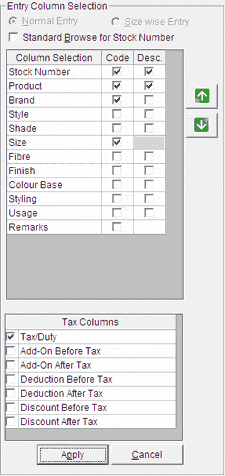

You can configure the data entry columns for the Purchase Order here, if the system parameter Allow PO/Indent Configuration under the category PO – Printing is enabled. Otherwise, the setting done using Purchase Order Configuration is used and you can only sequence the columns here.
The Entry Column Selection group is as shown.

Normal Entry/ Size Wise Entry: These two are disabled as the entry type is based on the indents/ purchase orders being consolidated.
Standard Browse for Stock Number: Choose to open the Advanced Item Search window instead of Browse - Stock Number window on pressing F2 while adding items that are not part of the purchase orders being consolidated. Advanced Item Search window allows specification of item selection criteria based on multiple attributes whereas Browse - Stock Number window allows item selection only based on code and description.
Column Selection: Displays the list of attributes for which the values may be displayed/ provided while consolidating the PO's.
Code: Select the attributes for which the code needs to be displayed/ provided while consolidating the PO's. All the selected columns will appear grayed in the grid for the items selected from the PO's being consolidated. In case of addition of items that are not part of the PO's being consolidated, the selected columns will appear enabled. However, data entry is not mandatory for all columns.
Desc.: Select the attributes for which the description needs to be displayed while consolidating the PO's. All the selected columns will appear grayed in the grid.
Click or to move the currently selected attribute up or down to place it at the appropriate position. The selected attributes will be displayed in the PO entry grid on the Purchase Order/Indent Consolidation window, in the same order as set here.
Tax Columns: Select the appropriate taxation parameter from the list. The values selected will be considered for tax computation, depending on whether it is before tax or after tax.